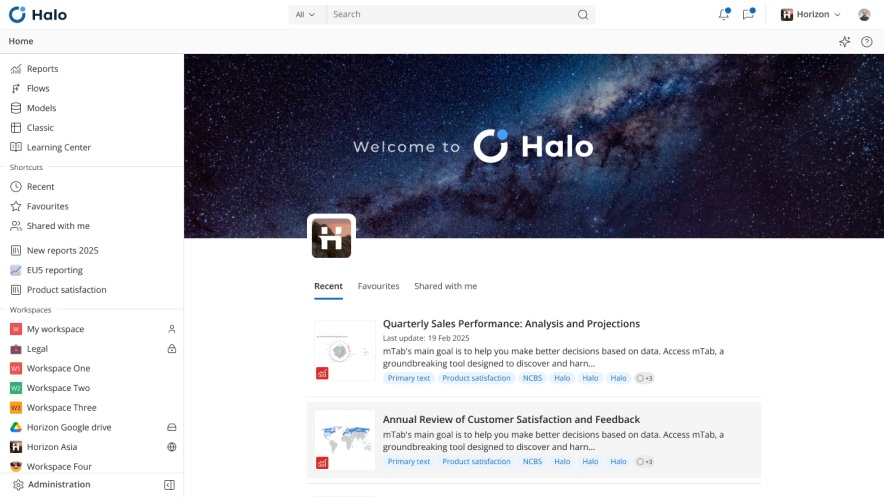
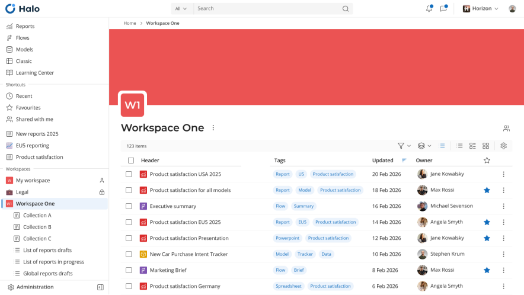
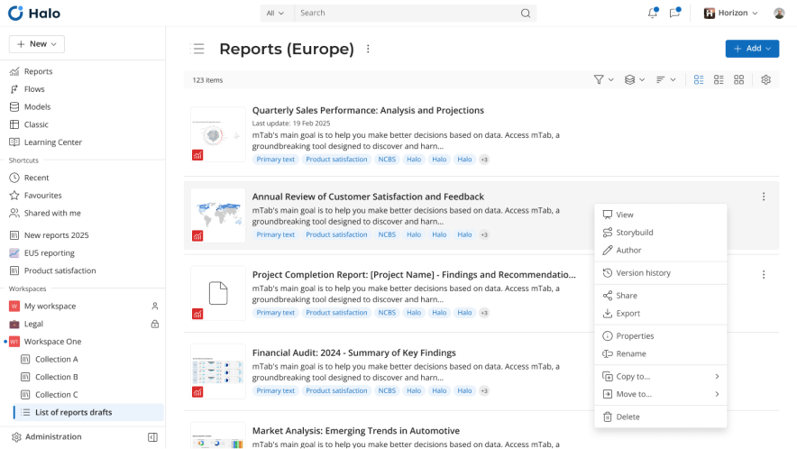
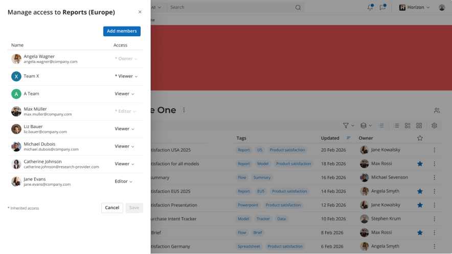
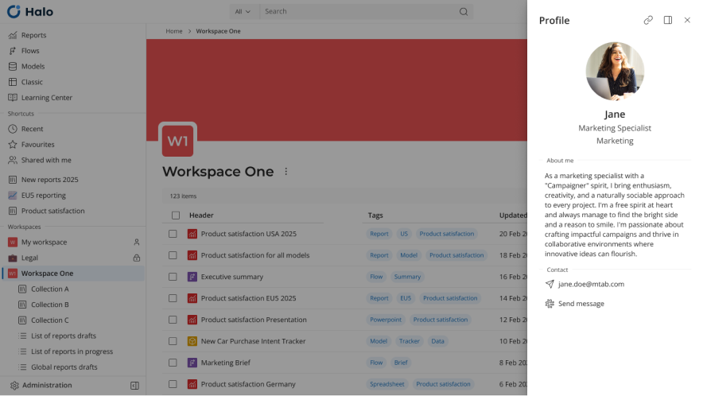
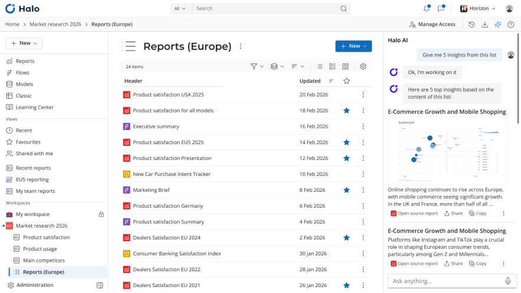

Halo
Pulling mTab's decision intelligence platform into one coherent product

Overview
Halo is mTab's decision intelligence platform. It brings together insights tools, market research reports and data from providers like J.D. Power, Kantar and Ipsos, so customers can make decisions based on something more solid than a hunch. As Head of Design I ran the design team and the whole product design process, and often ended up acting as product owner too, proposing and shaping new features.
Challenge
Before Halo, mTab's products were scattered. Several modules had been built over the years, each on its own, with inconsistent patterns and no shared design language. Our users were a mix of researchers, analysts and business decision-makers, and they had to move between disconnected interfaces every day. We needed to pull all of it into one platform without breaking the way people already worked.
My role
I was both designer and manager on this one, leading the team and working closely with Product from the start. We began with the most fundamental question: how do users enter and navigate a platform made up of separate applications? The first step was the landing page: a hub that acts as the jumping-off point for every module. Instead of dropping people straight into individual tools, Halo gives them one place to start and a clear route to whatever they need.
The second problem was structural. Work created in different modules (Reports, Flows, Models, mTab Classic) was scattered and hard to find. So we built a shared content layer that gathers everything in one place, making it easy to find, share and manage no matter which module produced it.
We then reframed the existing modules as editors, launched either from Halo or straight from a piece of content. What happened to each one depended on how much it was used and how much technical debt it carried. Some are being rewritten from scratch, some upgraded bit by bit, and a few are being retired.
We also moved everyone into a single admin panel, now being redesigned so customers can manage their own accounts instead of asking us to do it. On top of that we settled on one notifications system for the whole platform, and wrote documentation users can actually get to.
Outcome
Halo turned a set of disconnected tools into something that finally feels like one product. Users now have one place to start, one way to find their content, and the same experience wherever they go in the platform. The shared content layer fixed the fragmentation that used to make finding and sharing work such a chore. Moving everyone onto a single admin panel made user management far simpler, and the editor rewrites are modernising the platform gradually, without pulling the rug out from under anyone.
What's next
Halo keeps evolving. We're continuing to add new features and steadily migrating users from the older parts of the system onto the new platform, so over time everything they need lives in one place.




